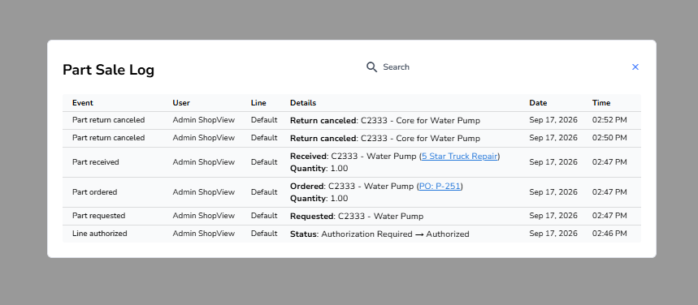

The work order's dialog, titled for the object: searchable, Event / User / Line / Details / Date / Time. Here it is showing the core being received, ordered, and both return cancellations.

It reads the same history the work order reads, through a part-sale route that refuses anything that is not a part sale.